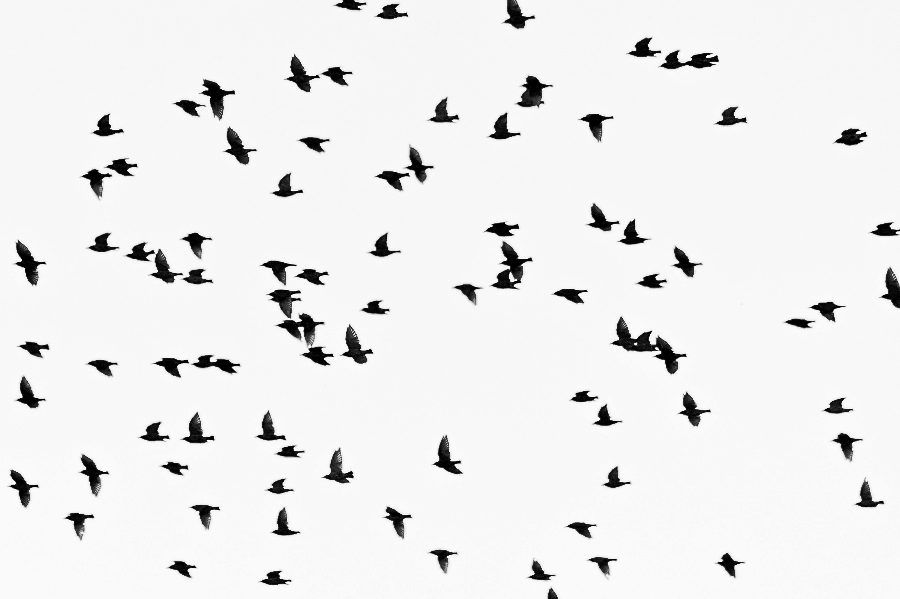
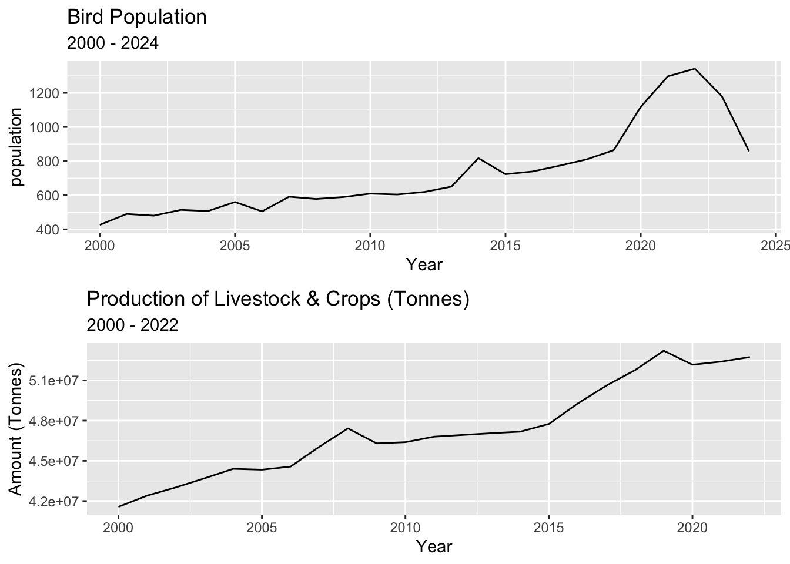

raw_data_2021 <- read_csv("data/PFW_all_2021_2024_May2024_Public.csv", show_col_types = FALSE)
raw_data_2016 <- read_csv("data/PFW_all_2016_2020_May2024_Public.csv", show_col_types = FALSE)
raw_data_2011 <- read_csv("data/PFW_all_2011_2015_May2024_Public.csv", show_col_types = FALSE)
raw_data_2006 <- read_csv("data/PFW_all_2006_2010_May2024_Public.csv", show_col_types = FALSE)
raw_data_2001 <- read_csv("data/PFW_all_2001_2005_May2024_Public.csv", show_col_types = FALSE)
raw_data_1996 <- read_csv("data/PFW_all_1996_2000_May2024_Public.csv", show_col_types = FALSE)
raw_data_1988 <- read_csv("data/PFW_all_1988_1995_May2024_Public.csv", show_col_types = FALSE)
raw_data_combined <- rbind(raw_data_1996, raw_data_1988, raw_data_2001, raw_data_2006, raw_data_2011, raw_data_2016, raw_data_2021) %>%
options(readr.show_col_types = FALSE)
bird_data <- raw_data_combined %>%
filter(SPECIES_CODE == c("sprpip", "henspa", "graspa", "lecspa", "savspa", "savspa4",
"ipsspa", "bldspa", "savspa3", "labspa", "wesmea", "mcclon", "grpchi",
"greprc1", "baispa", "chclon", "shtgro", "lobcur", "larbun", "horlar",
"horlar3", "horlar1", "sedwre1", "easmea", "easmea2", "dickci", "norbob",
"norbob1", "x00688", "ferhaw", "burowl", "logshr", "y00620", "casspa",
"fiespa", "aplfal", "lilmea2", "comnig", "sonspa", "sonspa2", "swaspa")) %>%
group_by(Year) %>%
count(Year) %>%
ungroup(Year) %>%
rename("Population" = "n") %>%
filter(Year > 1999)Birds on the Brink
news

Is Agriculture really the main factor to the decline of grasslands birds in North America?
In first glance, it may seem that agriculture is the culprit to the decline, especially since that agriculture and industrial farming is increasingly getting bigger. Additionally, this would also align with various online journals and reports. For instance, an online journal published in 2018, states that the increase in agriculture and use of pesticide in industrial farming is one of the biggest reasons behind the decline in grassland/farmland birds (Stanton R.L et al. 2018)
To get the answer to the question, an analysis needs to be done for both the agriculture/industrial farming in North America and the grassland bird population.
To get to a conclusion, the following steps were needed to be done.
The first step was to get the necessary data. A survey called Project FeederWatch, that is undertaken by volunteers, records sightings of different species of birds (Project FeederWatch n.d.). This data can be used to examine the bird population within North America.
To analyse the changes over time, data for various years were needed to be downloaded. The Project FeederWatch contains recorded observations from 1988 to 2021. The data from these years were combined into a singular dataset. Additionally, the dataset with the combined years needed to be filtered to only show grassland birds. Moreover, the variable that shows the total population was renamed to aid in readability. This is shown below.
Table 1 below shows the final data as a table, once the above data preparation is done. The following variables are included within the final dataset:
- Population: Total population of grassland birds in North America.
- Year: This variable corresponds to the year in which each observation has occurred.
| Year | population |
|---|---|
| 2000 | 426 |
| 2001 | 490 |
| 2002 | 480 |
| 2003 | 514 |
| 2004 | 507 |
| 2005 | 560 |
| 2006 | 505 |
| 2007 | 591 |
| 2008 | 578 |
| 2009 | 589 |
| 2010 | 609 |
| 2011 | 604 |
| 2012 | 619 |
| 2013 | 650 |
| 2014 | 817 |
| 2015 | 723 |
| 2016 | 739 |
| 2017 | 773 |
| 2018 | 810 |
| 2019 | 864 |
| 2020 | 1118 |
| 2021 | 1297 |
| 2022 | 1342 |
| 2023 | 1180 |
| 2024 | 858 |
Now, whats next was to find a source of comparison. The production of livestock and various crops was identified as one of the biggest types of industrial farming in North America. With this in mind, I was able to move my attention to find the necessary data. Data from the Food and Agriculture Organisation of the United Nations (FAO) records data on how much of various livestock and crops were produced in North America. Due to the fact that the raw downloaded file from the FAO consist quite a number of variables, only the relevant variables were included; these are:
- Area: This variable records the area of each observation. This is fixed to North America only.
- Amount: Records the total amount (in tonnes) of livestock and crops produced within North America.
- Year: This variable records what year in which each observation has occurred.
Furthermore, to improve readability, the variable that holds the total amount of production for each year was renamed. The above described data preparation is shown below.
agriculture_data <- read_xls("data/FAOSTAT_data_en_9-6-2024.xls") %>%
filter(Year > 1999) %>%
select( "Area", "Year", "Value") %>%
rename("Amount" = "Value")Table 2 below shows the total production in tonnes for each of the years, from the year 2000 to 2022.
| Area | Year | Value |
|---|---|---|
| Northern America | 2000 | 41565535 |
| Northern America | 2001 | 42405505 |
| Northern America | 2002 | 43016765 |
| Northern America | 2003 | 43697369 |
| Northern America | 2004 | 44403168 |
| Northern America | 2005 | 44337790 |
| Northern America | 2006 | 44570381 |
| Northern America | 2007 | 46054336 |
| Northern America | 2008 | 47420149 |
| Northern America | 2009 | 46301694 |
| Northern America | 2010 | 46393382 |
| Northern America | 2011 | 46804305 |
| Northern America | 2012 | 46933168 |
| Northern America | 2013 | 47063410 |
| Northern America | 2014 | 47175731 |
| Northern America | 2015 | 47754226 |
| Northern America | 2016 | 49274546 |
| Northern America | 2017 | 50614968 |
| Northern America | 2018 | 51768012 |
| Northern America | 2019 | 53220144 |
| Northern America | 2020 | 52173485 |
| Northern America | 2021 | 52404055 |
| Northern America | 2022 | 52744361 |
Now at first glance, both Table 1 and Table 2 make it difficult to make any meaningful conclusions, due to only showing figures/numbers. Due to this, a visual comparision needed to be made, in a form of plots.
So, by using R and the various packages within it, a time series plot can be made for each of the data. The below plots show the plotted data from both Project Feeder Watch Survey and the Food and Agriculture Organisation of the United Nations (FAO).

Notice anything interesting from the plots in Figure 1 ? Well upon first inspection, each of the plots for the production of livestock and crops, and the population of grassland birds appear to follow a gradual increasing trend over the years. Now, there are noticeable fluctuations in both of the plots, with the population of grassland birds experiencing both a significant inline and decline within its trend, as shown at the end of the plot.
So linking back to the original question on if the growth of agriculture/industrial farming is the main factor to the decline in grassland birds in North America, the above plots clearly show that even though the production of livestock & various crops gradually increase over the years, there doesn’t seem to be a noticeable adverse effect within the grassland bird population.
Given that the growth of agriculture or industrial farming is not the leading factor to the decline of grassland birds in North America, what is? Well according to a news article published on Virginia Tech, it states that cats and window collisions is another contributing factor to the number of bird deaths, with up-to one billion birds dying due to window collisions, and another 2.4 million deaths due to cats (VIRGINIA TECH 2024).
So what does this all mean? does the growth of agriculture and industrial farming result in the decline of grasslands birds? Well, maybe, but for the case of North America, it does not appear to result in an adverse effect to the bird population. However, as this is only considering North America, conclusions for other regions cannot be made, so the growth of agriculture may very well be a leading factor to decline of grassland birds, just not in North America.
Project FeederWatch (n.d.) PROJECT OVERVIEW, Project FeederWatch, accessed 1 October 2024.https://feederwatch.org/about/project-overview/
Stanton R.L, Morrissey C.A, Clark R.G (2018) ‘Analysis of trends and agricultural drivers of farmland bird declines in North America: A review’, Agriculture, ecosystems & environment, 254:244-254, doi:10.1016/j.agee.2017.11.028
VIRGINIA TECH (2024) North America bird populations are declining; expert explains why, VIRGINIA TECH, accessed 2 October 2024. https://news.vt.edu/articles/2024/01/VT_Expert_Bird_Populations.html#